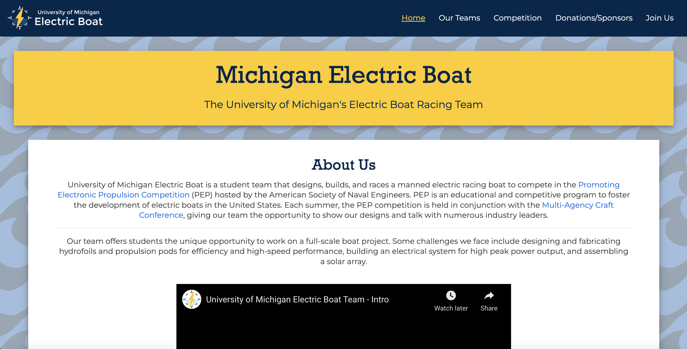

UMEB Website Redesign
Timeline: 4 weeks with periodic updates
Role: Website and UX Designer
Tools: Figma, Miro, HTML, CSS, JavaScript, Bootstrap
Project description: I re-organized the Information Architecture of the old UMEB website and built a new site from scratch using HTML, CSS, and JavaScript.
Overview
During the process of the redesign, I began with re-organizing the information architecture of the site. Then, I met with leaders of UMEB to discuss what they wanted in a site and took their needs into account when drawing up my original sketches. I created low-fidelity wireframes describing the architecture, and ensured that the team was satisfied before proceeding. I then built the site from scratch using HTML, CSS, JavaScript, and Bootstrap plugins. Over time, I have maintianed the site by periodically adding information and other features as needed, but most of it remains the same as when I first designed it about two years ago.
Cart Sorting Exercise
When I was first recruited to make a new site for UMEB, I noticed that their old site had many organization issues. I involved members of UMEB as well as outsiders who had never viewed the site before in my small card sorting exercise in an attempt to organize the site a bit better. I took elements from the website, and separated them into cards that contained basic information. I had participants group the information based on where they thought it should be placed on the site, with almost no guidance. This ambiguity led to less bias and the ability to structure the site to benefit users who haven't used it before.
Wireframing
After determining which information should be on which pages of the site, I began creating wireframes to lay out the information appropriately. I was provided with logos, images, and most of the text by members of UMEB, so I was able to know ahead of time how much I was working with. I created wireframes for the mobile and desktop views, since I would be creating a mobile-first design with my HTML and CSS structure. After creating the wirefeames, I met with members of UMEB to get the okay to start building the site.
Mobile Design
I used my wireframes as a template for the mobile design, beginning with writing HTML code and then adding CSS to style the pages appropriately. I wrote my code with a mobile-first approach in an attempt to make the site accessible to someone with any device. I also added in additions like the hamburger navigation menu to make the site easier to use on a smaller screen.
Desktop Design
After creating the mobile view of the site and styling it to ny preferences, I ussed media queries to change the layout of the site on larger screens to be more user friendly. This included more additions of Bootstrap plugins and other responsive design additions to make the site appealing on all screen and browser sizes.
Accessibility
In all of my designs, I try to prioritize accessibility to ensure that whatever I make is usable by as many people as possible. In my HTML, I made sure that all of the necessary elements contained alt-text and aria-labels when necessary. I also used the axe, WAVE, and w3 accessibility checkers to make sure my site passed basic measures for external devices (like screen readers) and was condusive to color blind users. While these checkers are a big help, I am still working every day to make the site more accessible because no site is ever truly perfect.